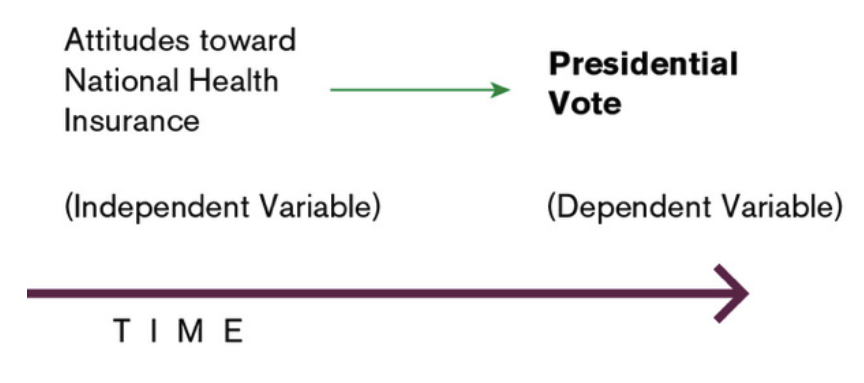

<!DOCTYPE html>
<html lang="en">
  <head>
    <meta charset="utf-8" />
    <meta name="viewport" content="width=device-width, initial-scale=1.0, maximum-scale=1.0, user-scalable=no" />

    <title></title>
    <link rel="stylesheet" href="dist/reveal.css" />
    <link rel="stylesheet" href="css/stefano.css" id="theme" />
    <link rel="stylesheet" href="plugin/highlight/zenburn.css" />
	<link rel="stylesheet" href="css/layout.css" />
	<link rel="stylesheet" href="plugin/customcontrols/style.css">

	<link rel="stylesheet" href="plugin/reveal-pointer/pointer.css" />


    <script defer src="dist/fontawesome/all.min.js"></script>

	<script type="text/javascript">
		var forgetPop = true;
		function onPopState(event) {
			if(forgetPop){
				forgetPop = false;
			} else {
				parent.postMessage(event.target.location.href, "app://obsidian.md");
			}
        }
		window.onpopstate = onPopState;
		window.onmessage = event => {
			if(event.data == "reload"){
				window.document.location.reload();
			}
			forgetPop = true;
		}

		function fitElements(){
			const itemsToFit = document.getElementsByClassName('fitText');
			for (const item in itemsToFit) {
				if (Object.hasOwnProperty.call(itemsToFit, item)) {
					var element = itemsToFit[item];
					fitElement(element,1, 1000);
					element.classList.remove('fitText');
				}
			}
		}

		function fitElement(element, start, end){

			let size = (end + start) / 2;
			element.style.fontSize = `${size}px`;

			if(Math.abs(start - end) < 1){
				while(element.scrollHeight > element.offsetHeight){
					size--;
					element.style.fontSize = `${size}px`;
				}
				return;
			}

			if(element.scrollHeight > element.offsetHeight){
				fitElement(element, start, size);
			} else {
				fitElement(element, size, end);
			}		
		}


		document.onreadystatechange = () => {
			fitElements();
			if (document.readyState === 'complete') {
				if (window.location.href.indexOf("?export") != -1){
					parent.postMessage(event.target.location.href, "app://obsidian.md");
				}
				if (window.location.href.indexOf("print-pdf") != -1){
					let stateCheck = setInterval(() => {
						clearInterval(stateCheck);
						window.print();
					}, 250);
				}
			}
	};


        </script>
  </head>
  <body>
    <div class="reveal">
      <div class="slides"><section  data-markdown><script type="text/template"><!-- .slide: class="drop" -->
<div class="" style="position: absolute; left: 0px; top: 0px; height: 700px; width: 960px; min-height: 700px; display: flex; flex-direction: column; align-items: center; justify-content: center" absolute="true">

# Formulating an Explanation
</div></script></section><section ><section data-markdown><script type="text/template"><!-- .slide: class="drop" -->
<div class="" style="position: absolute; left: 0px; top: 0px; height: 700px; width: 960px; min-height: 700px; display: flex; flex-direction: column; align-items: center; justify-content: center" absolute="true">

# Theory
</div></script></section><section data-markdown><script type="text/template"><!-- .slide: class="drop" -->
<div class="" style="position: absolute; left: 0px; top: 0px; height: 700px; width: 960px; min-height: 700px; display: flex; flex-direction: column; align-items: center; justify-content: center" absolute="true">

## Theory and the Research Process


</div></script></section><section data-markdown><script type="text/template"><!-- .slide: class="drop" -->
<div class="" style="position: absolute; left: 0px; top: 0px; height: 700px; width: 960px; min-height: 700px; display: flex; flex-direction: column; align-items: center; justify-content: center" absolute="true">

### What is a Theory? Some Definitions

- &shy;<!-- .element: class="fragment" data-fragment-index="1" -->Oxford English Dictionary: “*A scheme or system of ideas or statements held as an explanation or account of a group of facts or phenomena*”
- &shy;<!-- .element: class="fragment" data-fragment-index="2" -->Robson (2011: 65): “In very general terms it is an **explanation** of what is going on in the situation, phenomenon or whatever that we are investigating”
- &shy;<!-- .element: class="fragment" data-fragment-index="3" -->**Theory as a “simplifier**: "a theory is an attempt to make sense of the world by indicating that some **factors** are more important than others and specifying **relations among them**” (Halperin and Heath 2020)
</div></script></section><section data-markdown><script type="text/template"><!-- .slide: class="drop" -->
<div class="" style="position: absolute; left: 0px; top: 0px; height: 700px; width: 960px; min-height: 700px; display: flex; flex-direction: column; align-items: center; justify-content: center" absolute="true">

### Type of Theory: Range

- &shy;<!-- .element: class="fragment" data-fragment-index="1" -->**Grand Theory**
	- Overarching theoretical frameworks seeking to explain an entire body of human behavior
	- E.g. *Realism*, *Marxism*
- &shy;<!-- .element: class="fragment" data-fragment-index="2" -->**Middle-range theories** (Merton 1949)
	- Theories that attempted to understand and explain limited classes of events of behaviors
	- These theories can more easily be verified through empirical research and then perhaps systematized into broader theoretical frameworks
</div></script></section><section data-markdown><script type="text/template"><!-- .slide: class="drop" -->
<div class="" style="position: absolute; left: 0px; top: 0px; height: 700px; width: 960px; min-height: 700px; display: flex; flex-direction: column; align-items: center; justify-content: center" absolute="true">

### Role of Theory in the Research Process

- &shy;<!-- .element: class="fragment" data-fragment-index="1" -->**Theory Generating research**:
	- &shy;<!-- .element: class="fragment" data-fragment-index="2" -->Begins with a question and a basic proposition, examines a set of cases and comes up with a more specific set of propositions, which can be more widely and rigorously tested
- &shy;<!-- .element: class="fragment" data-fragment-index="3" -->**Theory Testing Research**
	- &shy;<!-- .element: class="fragment" data-fragment-index="4" -->Begins by stating, on the basis of the theory, what we would expect to find and sees whether that expectation is fulfilled.
	- &shy;<!-- .element: class="fragment" data-fragment-index="5" -->Objective is to provide or disprove a certain theory
- &shy;<!-- .element: class="fragment" data-fragment-index="6" -->**Theory Applying Research**
	- Apply a theory to a specific empirical case (particular wars, revolutions, election outcomes) with the aim of explaining it.
	- Goal is not to contribute in any way to the theory itself, but just to use its propositions to explain a particular case.
	- **Most UG dissertations will fit into this category**
</div></script></section></section><section ><section data-markdown><script type="text/template"><!-- .slide: class="drop" -->
<div class="" style="position: absolute; left: 0px; top: 0px; height: 700px; width: 960px; min-height: 700px; display: flex; flex-direction: column; align-items: center; justify-content: center" absolute="true">

## Establishing Causality
</div></script></section><section data-markdown><script type="text/template"><!-- .slide: class="drop" -->
<div class="" style="position: absolute; left: 0px; top: 0px; height: 700px; width: 960px; min-height: 700px; display: flex; flex-direction: column; align-items: center; justify-content: center" absolute="true">

### Elements of a Causal Argument

- &shy;<!-- .element: class="fragment" data-fragment-index="1" -->**Dependent Variable:** the phenomenon your are trying to explain
- &shy;<!-- .element: class="fragment" data-fragment-index="2" -->**Explanatory/Independent variable:** Factors you think must be taken into consideration in order to answer your question 
- &shy;<!-- .element: class="fragment" data-fragment-index="3" -->**Relationship** between DV and IV: Logical proposition about how you think these factors or elements are **related** to each other
</div></script></section><section data-markdown><script type="text/template"><!-- .slide: class="drop" -->
<div class="" style="position: absolute; left: 0px; top: 0px; height: 700px; width: 960px; min-height: 700px; display: flex; flex-direction: column; align-items: center; justify-content: center" absolute="true">

### Type of Relationship between variables

- &shy;<!-- .element: class="fragment" data-fragment-index="1" -->**Association (correlation, co-variance**)
	- A variable is in some way associated with, related to, or linked with another variable
	- &shy;<!-- .element: class="fragment" data-fragment-index="2" -->Positively related: two variables change in the same direction
	- &shy;<!-- .element: class="fragment" data-fragment-index="3" -->Negatively related: the variables change in opposite directions
- &shy;<!-- .element: class="fragment" data-fragment-index="4" -->**Causality**
	- Change in one variable bring about changes in another.
</div></script></section><section data-markdown><script type="text/template"><!-- .slide: class="drop" -->
<div class="" style="position: absolute; left: 0px; top: 0px; height: 700px; width: 960px; min-height: 700px; display: flex; flex-direction: column; align-items: center; justify-content: center" absolute="true">

###  Correlation is not Causation


</div></script></section><section data-markdown><script type="text/template"><!-- .slide: class="drop" -->
<div class="" style="position: absolute; left: 0px; top: 0px; height: 700px; width: 960px; min-height: 700px; display: flex; flex-direction: column; align-items: center; justify-content: center" absolute="true">

### Spurious Association

- &shy;<!-- .element: class="fragment" data-fragment-index="1" -->Bivariate association between two variables can be quite unrepresentative of the true causal connection between the variables.
- &shy;<!-- .element: class="fragment" data-fragment-index="2" -->The association between X and Y may reflect not only their causal connection but also the influence of a third variable (Z) that affects both of them
- &shy;<!-- .element: class="fragment" data-fragment-index="3" -->Confounding variables are those that affect other variables in a way that produces spurious or distorted associations between two variables.


<div class="mermaid">
graph LR


Z --> X
Z --> Y
X --> Y
 

</div>
</div></script></section><section data-markdown><script type="text/template"><!-- .slide: class="drop" -->
<div class="" style="position: absolute; left: 0px; top: 0px; height: 700px; width: 960px; min-height: 700px; display: flex; flex-direction: column; align-items: center; justify-content: center" absolute="true">

### Causal Mechanism linking the variables.
- &shy;<!-- .element: class="fragment" data-fragment-index="1" -->You have to tell a plausible story that connects the independent variable with the outcome that you are trying to explain
- &shy;<!-- .element: class="fragment" data-fragment-index="2" -->We should understand how (why) X causes Y, not just whether it affects Y
- &shy;<!-- .element: class="fragment" data-fragment-index="3" -->We should understand how much X matters to Y, not just which X matters to Y
</div></script></section></section><section ><section data-markdown><script type="text/template"><!-- .slide: class="drop" -->
<div class="" style="position: absolute; left: 0px; top: 0px; height: 700px; width: 960px; min-height: 700px; display: flex; flex-direction: column; align-items: center; justify-content: center" absolute="true">

## Visualizing Theories




<small class="caption">Source: Johnson et al. 2015</small>
</div></script></section><section data-markdown><script type="text/template"><!-- .slide: class="drop" -->
<div class="" style="position: absolute; left: 0px; top: 0px; height: 700px; width: 960px; min-height: 700px; display: flex; flex-direction: column; align-items: center; justify-content: center" absolute="true">


<small class="caption">Source: Johnson et al. 2015</small>
</div></script></section><section data-markdown><script type="text/template"><!-- .slide: class="drop" -->
<div class="" style="position: absolute; left: 0px; top: 0px; height: 700px; width: 960px; min-height: 700px; display: flex; flex-direction: column; align-items: center; justify-content: center" absolute="true">


<small class="caption">Source: Johnson et al. 2015</small>
</div></script></section></section><section  data-markdown><script type="text/template"><!-- .slide: class="drop" -->
<div class="" style="position: absolute; left: 0px; top: 0px; height: 700px; width: 960px; min-height: 700px; display: flex; flex-direction: column; align-items: center; justify-content: center" absolute="true">

## From Theory to Hypotheses

- &shy;<!-- .element: class="fragment" data-fragment-index="1" -->A theory provides a general explanation for why patterns exist among concepts.
- &shy;<!-- .element: class="fragment" data-fragment-index="2" -->To test a theory we need to find observable implications
- &shy;<!-- .element: class="fragment" data-fragment-index="3" -->**Definition of Hypothesis**
	- Kellstead and Whitten: a theory-based statement about a relationship that we expect to observe
</div></script></section><section ><section data-markdown><script type="text/template"><!-- .slide: class="drop" -->
<div class="" style="position: absolute; left: 0px; top: 0px; height: 700px; width: 960px; min-height: 700px; display: flex; flex-direction: column; align-items: center; justify-content: center" absolute="true">

### Formulating a Good Hypothesis

- **Empirical**
	- Hypotheses should be empirical, rather than normative statements.
	- E.g. “Democracy is the best form of government”  --> this cannot be tested.
	- E.g. “Democracy is more likely to be found in countries with high literacy than in countries with low literacy” --> this can be observed empirically.
- **Generality**
	- A good hypothesis should propose a relationship pertaining to many occurrences of a phenomenon rather than just to one.
	- E.g. “Jill votes Conservative Party because her mother does too” --> “People tend to adopt political views similar to those of their parents”
</div></script></section><section data-markdown><script type="text/template"><!-- .slide: class="drop" -->
<div class="" style="position: absolute; left: 0px; top: 0px; height: 700px; width: 960px; min-height: 700px; display: flex; flex-direction: column; align-items: center; justify-content: center" absolute="true">

### Formulating a Good Hypothesis
- **Plausibility**  
	- Any number of hypotheses could be thought of and tested, but many fewer are plausible ones
	- There should be some logical reason for thinking that the relationship in the hypothesis might be confirmed.
- **Precision** 
	- Specify the nature and direction in the relationship between variables
	- E.g. “How a person votes for president depends on the information he or she is exposed to” à “The more information favoring candidate X a person is exposed to during a political campaign, the more likely that person is to vote for candidate X”.
</div></script></section><section data-markdown><script type="text/template"><!-- .slide: class="drop" -->
<div class="" style="position: absolute; left: 0px; top: 0px; height: 700px; width: 960px; min-height: 700px; display: flex; flex-direction: column; align-items: center; justify-content: center" absolute="true">

### Formulating a Good Hypothesis
- **Testability**
	- It must be possible and feasible to obtain data that will allow one to evaluate the hypothesis empirically
	- E.g. “The more a child is supportive of political authorities, the less likely that child will be to engage in political dissent as an adult”.
- **Falsifiability**  
	- It needs to be possible to define data that would show that the theory is wrong
	- Avoid “omnipredictions” (hypotheses that are fulfilled by all observed events)
</div></script></section><section data-markdown><script type="text/template"><!-- .slide: class="drop" -->
<div class="" style="position: absolute; left: 0px; top: 0px; height: 700px; width: 960px; min-height: 700px; display: flex; flex-direction: column; align-items: center; justify-content: center" absolute="true">

### Formulating a Good Hypothesis
- &shy;<!-- .element: class="fragment" data-fragment-index="1" -->**Not Deterministic**
	- "IV always produces DV  regardless of other factors" is an overly deterministic argument
	- In social sciences, causal argument should be probabilistic  (e.g. "IV raises the chances of DV)
- &shy;<!-- .element: class="fragment" data-fragment-index="2" -->Not **Tautological**
	- X must be separate from Y
</div></script></section><section data-markdown><script type="text/template"><!-- .slide: class="drop" -->
<div class="" style="position: absolute; left: 0px; top: 0px; height: 700px; width: 960px; min-height: 700px; display: flex; flex-direction: column; align-items: center; justify-content: center" absolute="true">

## Situate Your Argument in the **Literature**
- Be clear in what ways your hypothesis/theory build upon or differ from what has been done before (see literature review)
</div></script></section></section><section ><section data-markdown><script type="text/template"><!-- .slide: class="drop" -->
<div class="" style="position: absolute; left: 0px; top: 0px; height: 700px; width: 960px; min-height: 700px; display: flex; flex-direction: column; align-items: center; justify-content: center" absolute="true">

## Activity
</div></script></section><section data-markdown><script type="text/template"><!-- .slide: class="drop" -->
<div class="" style="position: absolute; left: 0px; top: 0px; height: 700px; width: 960px; min-height: 700px; display: flex; flex-direction: column; align-items: center; justify-content: center" absolute="true">

- Using the library’s website, locate the following articles
	- Kam, Cindy. 2012. “Risk Attitudes and Political Participation.” American Journal of Political Science 56 (4): 817–36.
	- Colgan, Jeff. 2010. “Oil and revolutionary Governments: Fuel for International Conflict.” International Organization 64 (4): 661–94.
	- Rueda, David. 2008. “Left Government, policy, and Corporatism: explaining the Influence of partisanship on Inequality.” World Politics 60 (3): 349–89.
- For each article, summarize the overall theory presented and identify the research hypothesis (or hypotheses).
</div></script></section><section data-markdown><script type="text/template"><!-- .slide: class="drop" -->
<div class="" style="position: absolute; left: 0px; top: 0px; height: 700px; width: 960px; min-height: 700px; display: flex; flex-direction: column; align-items: center; justify-content: center" absolute="true">

## Activity: Analysis of Existing Hypotheses

- For each hypothesis identify the independent variable, the dependent variable, and the unit of analysis.
	- An increase in a person’s education causes an increase in a person’s income (Answer: Independent variable: education; dependent variable: income; unit of analysis: individuals)
- Hypotheses
	1.  The U.S. public is more willing to support the use of the country’s military forces when U.S. interests are affected than when they are not.
	2.  An increase in the number of nongovernmental organizations active in a nondemocratic country increases that country’s likelihood of moving to a democratic form of government.
	3.  Increases in international aid to improve water quality cause marked improvement in public health in developing countries.
	4.  Elections that take place during warm weather will have higher turnout than elections that take place during cold weather.
</div></script></section><section data-markdown><script type="text/template"><!-- .slide: class="drop" -->
<div class="" style="position: absolute; left: 0px; top: 0px; height: 700px; width: 960px; min-height: 700px; display: flex; flex-direction: column; align-items: center; justify-content: center" absolute="true">

## Activity: Fix the Hypothesis
- Each of the following hypotheses is faulty in some way. Rewrite an improved hypothesis
	- There is a correlation between the president’s approval rating and the price of gasoline.
	- The turnout rate in my constituency was low because my MP is not very popular.
	- Cities with high rates of public transit ridership are better than cities in which ridership is low.
	- People who are active in politics tend to contribute money to election campaigns more often than people who are not active in politics.
</div></script></section><section data-markdown><script type="text/template"><!-- .slide: class="drop" -->
<div class="" style="position: absolute; left: 0px; top: 0px; height: 700px; width: 960px; min-height: 700px; display: flex; flex-direction: column; align-items: center; justify-content: center" absolute="true">

## Activity: Design Hypothesis
- Write six hypotheses you would want to test to answer the following question: Why do citizens participate in politics?
	- 1.
	- 2.
	- 3.
	- 4.
	- 5.
	- 6.
- Try to generate hypotheses that include different dependent variables related to the research question. For example, consider different kinds of political participation that may have different motivating factors (independent variables).
</div></script></section><section data-markdown><script type="text/template"><!-- .slide: class="drop" -->
<div class="" style="position: absolute; left: 0px; top: 0px; height: 700px; width: 960px; min-height: 700px; display: flex; flex-direction: column; align-items: center; justify-content: center" absolute="true">

## Activity: Design Hypothesis
-   Identify one independent and one dependent variable from the table.
- Write a theory for why the two variables should be associated with one another.
- Write a research hypothesis that you derive from your theory.

| Independent Variable       | Dependent Variable        |
| -------------------------- | ------------------------- |
| Political news consumption | Political Participation   |
| Income                     | Voter Turnout             |
| Political party membership | Political knowledge       |
| College-level education    | Amount donated to parties |
</div></script></section></section><section  data-markdown><script type="text/template"><!-- .slide: class="drop" -->
<div class="" style="position: absolute; left: 0px; top: 0px; height: 700px; width: 960px; min-height: 700px; display: flex; flex-direction: column; align-items: center; justify-content: center" absolute="true">

## Moving from Hypotheses to Empirics ... and back

-   Once you have some propositions then it is time to move on to “gets your hands dirty” and collect evidence
	- “*but the facts do not fit my theory*!!!”
    
-   Option 1: Stick with what you have
    -  Admit which propositions do not seem to fit
    - Discuss why you think the theory does not work
    - One answer that discredits our hypothesis is just as valid as one that confirms it
- Option 2: Rework the theory
	- Modify the theory and retest if on new data or a different set of data
	- Think of theory as your pet: “protect it, nurture it, defend it, but be prepared to have it put down”
</div></script></section></div>
    </div>

    <script src="dist/reveal.js"></script>

    <script src="plugin/markdown/markdown.js"></script>
    <script src="plugin/highlight/highlight.js"></script>
    <script src="plugin/zoom/zoom.js"></script>
    <script src="plugin/notes/notes.js"></script>
    <script src="plugin/math/math.js"></script>
	<script src="plugin/mermaid/mermaid.js"></script>
	<script src="plugin/chart/chart.min.js"></script>
	<script src="plugin/chart/plugin.js"></script>
	<script src="plugin/menu/menu.js"></script>
	<script src="plugin/customcontrols/plugin.js"></script>
	<script src="plugin/reveal-pointer/pointer.js"></script>

    <script>
      function extend() {
        var target = {};
        for (var i = 0; i < arguments.length; i++) {
          var source = arguments[i];
          for (var key in source) {
            if (source.hasOwnProperty(key)) {
              target[key] = source[key];
            }
          }
        }
        return target;
      }

	  function isLight(color) {
		let hex = color.replace('#', '');

		// convert #fff => #ffffff
		if(hex.length == 3){
			hex = `${hex[0]}${hex[0]}${hex[1]}${hex[1]}${hex[2]}${hex[2]}`;
		}

		const c_r = parseInt(hex.substr(0, 2), 16);
		const c_g = parseInt(hex.substr(2, 2), 16);
		const c_b = parseInt(hex.substr(4, 2), 16);
		const brightness = ((c_r * 299) + (c_g * 587) + (c_b * 114)) / 1000;
		return brightness > 155;
	}

	var bgColor = getComputedStyle(document.documentElement).getPropertyValue('--r-background-color').trim();
	var isLight = isLight(bgColor);

	if(isLight){
		document.body.classList.add('has-light-background');
	} else {
		document.body.classList.add('has-dark-background');
	}

      // default options to init reveal.js
      var defaultOptions = {
        controls: true,
        progress: true,
        history: true,
        center: true,
        transition: 'default', // none/fade/slide/convex/concave/zoom
        plugins: [
          RevealMarkdown,
          RevealHighlight,
          RevealZoom,
          RevealNotes,
          RevealMath.MathJax3,
		  RevealMermaid,
		  RevealChart,
		  RevealCustomControls,
		  RevealMenu,
	      RevealPointer
        ],


    	allottedTime: 120 * 1000,

		mathjax3: {
			mathjax: 'plugin/math/mathjax/tex-mml-chtml.js',
		},
		markdown: {
		  gfm: true,
		  mangle: true,
		  pedantic: false,
		  smartLists: false,
		  smartypants: false,
		},

		mermaid: {
			theme: isLight ? 'default' : 'dark',
		},

		customcontrols: {
			controls: [
				{id: 'toggle-overview',
				title: 'Toggle overview (O)',
				icon: '<i class="fa fa-th"></i>',
				action: 'Reveal.toggleOverview();'
				},
			]
		},
		menu: {
			loadIcons: false
		}
      };

      // options from URL query string
      var queryOptions = Reveal().getQueryHash() || {};

      var options = extend(defaultOptions, {"width":960,"height":700,"margin":0.04,"controls":true,"progress":true,"slideNumber":true,"transition":"fade","transitionSpeed":"slow"}, queryOptions);
    </script>

    <script>
      Reveal.initialize(options);
    </script>
  </body>

  <!-- created with Advanced Slides -->
</html>
